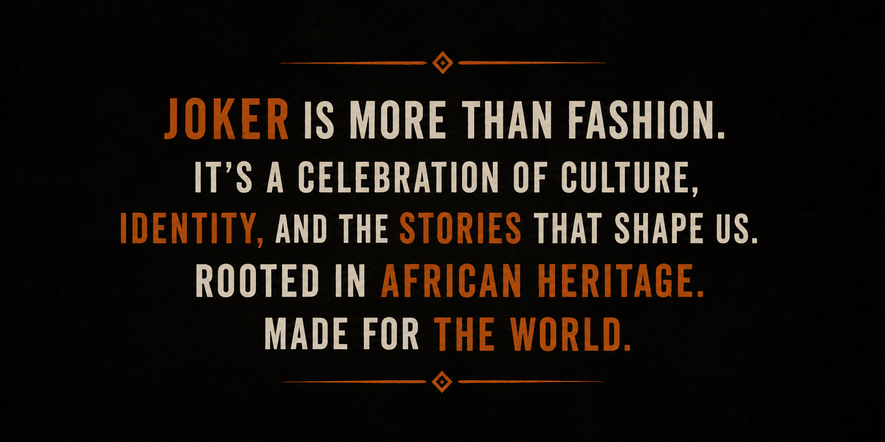

OUR STORY
WHY WE EXIST
JOKER was created from a simple idea: fashion should be more than something we wear. It should be a way to express identity, culture, creativity, and individuality.
We were inspired by the richness of African visual culture and by the power of fashion to communicate stories. Our goal is to create modern clothing that respects its inspirations while giving people space to express themselves.

[IMAGE: Brand Identity Banner]
Replace with: images/manifesto.pngAGAINST FAST FASHION
THE PROBLEM
Fast fashion causes severe damage to our world by prioritizing speed and cheap prices over ethics:
- Overconsumption: Encourages buying unnecessary items.
- Mass Waste: Millions of clothes end up in landfills.
- Poor Working Conditions: Workers receive unsafe spaces and low pay.
- Disposable Clothing: Low quality meant to be thrown away quickly.
- Environmental Damage: High pollution from toxic chemical dyes.
THE JOKER ALTERNATIVE
SLOW FASHION
We focus on timeless designs, thoughtful production, quality materials, and pieces that people can wear for longer.
FAIR TRADE
We believe the people who make clothing should be treated fairly and work in safe conditions.
ECO-CONSCIOUS
We aim to reduce waste and make more responsible choices about materials and production.
CULTURAL RESPECT
We use African-inspired visual elements as inspiration while recognizing the importance of respecting the cultures and histories behind them.
APPRECIATION VS. APPROPRIATION
Appreciation means learning from and respecting a culture while recognizing its origins, history, and meaning.
Appropriation happens when cultural elements are taken without understanding, credit, or respect, often turned into meaningless trends.
"Fashion should not cost the Earth or our culture. It should celebrate both."